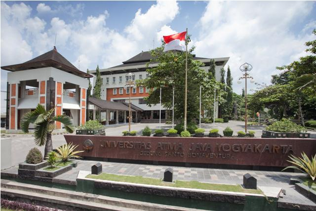
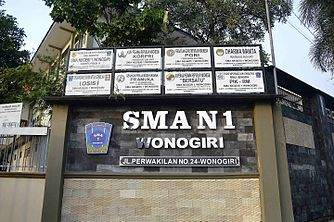

About Me
I'm a 22-year-old undergraduate student at Atma Jaya Yogyakarta University, majoring in Informatics.
I aim to become a web developer and currently learning web development skills.
I'm also interested in learning about machine learning, internet of things, and cybersecurity.
I'm an adaptive person, a persistent learner, and a resourceful problem solver.
Education
Atma Jaya Yogyakarta University
2021 - Present

I am currently studying at Universitas Atma Jaya Yogyakarta, in the Informatics program under the Faculty of Industrial Technology.
During my time here, I have learned about computer science topics like programming, software development, databases, and computer networks.
I'm also exploring areas like IoT (Internet of Things) as a Final Project.
The program focuses on how technology can be applied in real-world industries, which I believe will help me prepare for challenges in the tech field.
SMA N 1 Wonogiri
2018 - 2021

Before university, I studied at SMA Negeri 1 Wonogiri in the Science program (Mathematics and Natural Sciences).
Here, I learned subjects like mathematics, physics, chemistry, and biology, which developed my problem-solving and analytical skills.
This background has been really useful in my current studies, especially for understanding data analysis and applying scientific principles to technology.
Experiences
Communication and Information Coordinator (HIMAFORKA UAJY)
Period: September 2022 - October 2023
As the coordinator of the Communication and Information division of HIMAFORKA, I was responsible for leading the team and managing all social media accounts.
My role included organizing how information was delivered through digital channels and ensuring effective communication with other Informatics students.
Member of Information Systems, Publication, and Documentation (University Choir UAJY)
Period: August 2022 - August 2023
I was part of the team responsible for documenting various events and activities of the University Choir.
I also helped create publications for events and occurrences hosted by the choir.
Communication and Information Team Member (HIMAFORKA UAJY)
Period: November 2021 - September 2022
As a member of the Communication and Information division, I helped manage the social media accounts of HIMAFORKA and published information for the Informatics students.
This role required content management and strong communication skills to effectively reach the student body.